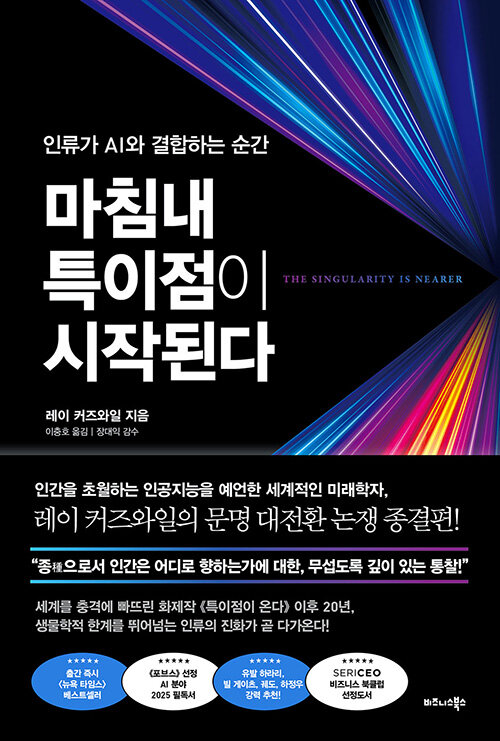
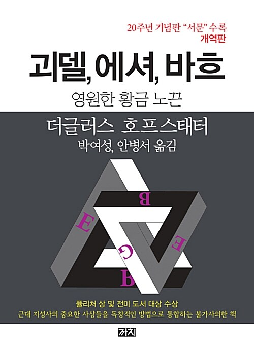
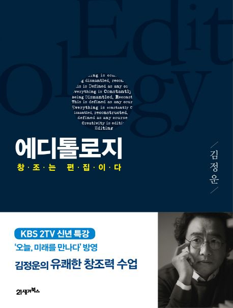
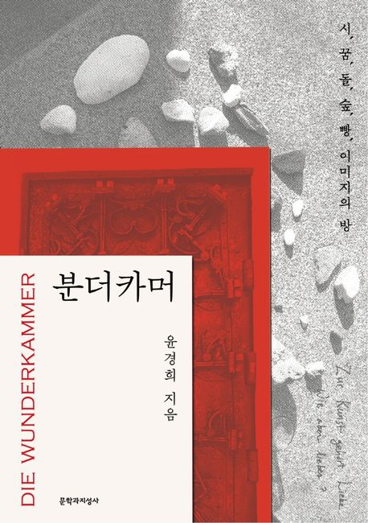
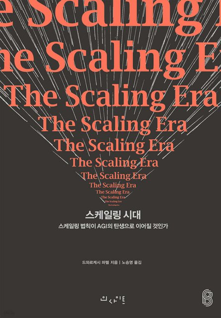
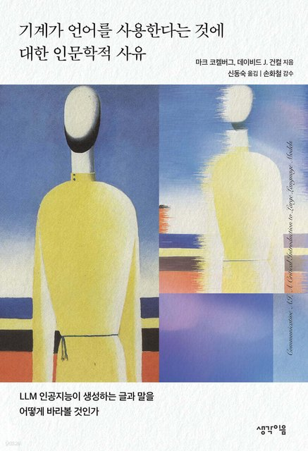
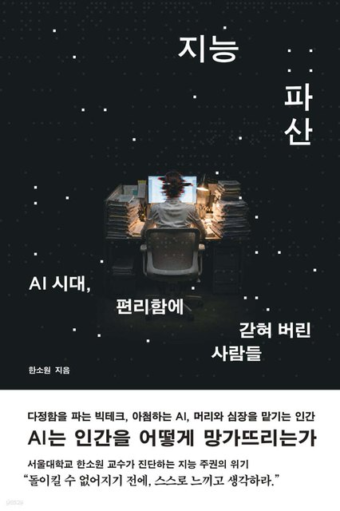
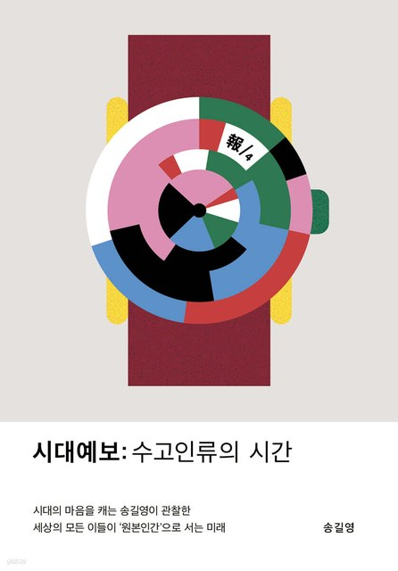

내 기록은 내 자산입니다
살롱에서 읽고 쓰고 판단한 기록이 디퍼님의 컴퓨터에 파일로 있습니다.인터넷 어디를 검색해도 나오지 않는 글입니다.
사막여우는 디퍼 살롱에서 각자 컴퓨터에 설치한 세컨브레인입니다.멤버는 매달 새옷 꾸러미를 열쇠말과 함께 받습니다.11월부터 별지기님들이 각자의 전문 살롱을 엽니다.

01 · DEEPER MEMBERSHIP
DEEPER MEMBERSHIP29,000
살롱이 끝나도 사막여우와 그동안의 기록은 내 컴퓨터에 남습니다.프론티어 AI 모델이 새로 나오는 간격은 점점 짧아지고 있습니다.디퍼 멤버십은 새 모델에 맞춘 사막여우를 매달 받는 일입니다.
THE DEEPER READING COLLECTION열두 권의 작은 책
디퍼 살롱의 문법·논리·수사를 짧은 책 열두 권으로 다시 엮었습니다.한 권에 네 장씩, 누구나 무료로 읽을 수 있습니다.
GRAMMAR · 나의 언어LOGIC · AI와 일하는 구조RHETORIC · 쓰고 전하는 일
TOGETHER · DEEPER FAMILY DAY디퍼 패밀리 데이
11월 월요일 밤마다 디퍼 패밀리 모두가 함께 모입니다.멤버십 멤버와 살롱 참여자 누구나 오실 수 있고, 별도 비용은 없습니다.
 11월 16일(월)『듀얼 브레인』 토론이선 몰릭 지음 · 신동숙 옮김 · 상상스퀘어
11월 16일(월)『듀얼 브레인』 토론이선 몰릭 지음 · 신동숙 옮김 · 상상스퀘어 11월 30일(월)『오뒷세이아』 9·10권 리딩호메로스 · 천병희 옮김 · 숲
11월 30일(월)『오뒷세이아』 9·10권 리딩호메로스 · 천병희 옮김 · 숲밤 9시 ~ 10시 30분네 번 모두 같은 시간 · 모임 링크는 모임 전에 알려 드립니다
SHELF · BOOKS WE READ함께 읽어 온 책
1기 첫 밤부터 살롱과 디퍼 리딩에서 함께 읽은 책입니다.








『마침내 특이점이 시작된다』 · 『엔비디아 젠슨 황, 생각하는 기계』 · 『괴델, 에셔, 바흐』 · 『에디톨로지』 · 『오뒷세이아』 · 『분더카머』 · 『스케일링 시대』 · 『기계가 언어를 사용한다는 것에 대한 인문학적 사유』 · 『지능 파산』 · 『시대예보: 수고인류의 시간』
CLBOOK · BOOKS WE MADE클북이 만든 책
클북이 저자와 함께 한 사람의 삶과 일을 엮어 펴낸 책입니다.


『그림과 만난 소년』 · 『다시 쓰는 마음』 · 『나를 잃지 않는 법』 · 『나는 언제 행복했더라』 · 『길을 열고 숲을 살리다』 · 『저녁 종이 울릴 때』 · 『삶이 레몬을 준다면 레모네이드를 만들어라』 · 『아무튼 지치지 않도록』 · 『하늘 투명 거울』 · 『기억이 나를 멈추게 한다면』 · 『내일은 날씨가 좋을지도 몰라』 · 『책으로 버티다』 · 『마녀 카페』 · 『오십, 질문을 시작하다』 · 『공대생 카밀은 왜 인문학에 빠졌을까?』 · 『쓰고 달콤하게』 · 『내 꿈은 퇴사다』 · 『문장 안에 살다』 · 『사커보이』 · 『숲에서 길을 만들고 물을 다루다』
SINCE MAY 2026 · INSIGHT NIGHTS인사이트 공유회
인사이트 공유회는 1기 첫 밤부터 이어 온 디퍼의 전통입니다.한 주 동안 각자 해 본 것을 화면에 띄워 나눕니다.
WHY · PERSONAL AI
철학자 앤디 클라크와 데이비드 차머스는 1998년 논문 「The Extended Mind」(Analysis 58권 1호)에서 이렇게 썼습니다.수첩에 적어 두고 꺼내 쓰는 기억도 그 사람의 마음에 속합니다.사막여우가 읽는 기록은 디퍼님의 로컬 컴퓨터에 저장됩니다.
살롱에서 읽고 쓰고 판단한 기록이 디퍼님의 컴퓨터에 파일로 있습니다.인터넷 어디를 검색해도 나오지 않는 글입니다.
디퍼님이 누구인지 AI에게 매번 설명하지 않아도 됩니다.사막여우는 디퍼님의 기록과 말투, 지난 판단을 읽고 답합니다.기록을 남길수록 사막여우는 디퍼님을 더 정확히 읽습니다.
새 모델이 나오면 어제의 설계로는 그 모델을 다 쓰지 못합니다.디퍼가 매달 사막여우를 새 모델에 맞춰 손봅니다.디퍼님은 꾸러미를 받아 새옷 한 번만 입히면 됩니다.
NOVEMBER
신청이 확인되면 다음 날 카톡으로 보내 드립니다.11월 업데이트 시스템 체계를 신청 즉시 10월부터 사용하실 수 있습니다.
다음 꾸러미는 12월 1일입니다.
EVERY MONTH
함께하실 수 있는 분
회비와 신청
많이 묻는 것

02 · 별지기 살롱
11월부터 디퍼는 별지기님들의 전문 살롱을 디퍼 커뮤니티의 핵심에 둡니다.콤포스텔라 1기 별지기님들이 자기 일에서 직접 써 온 방법으로 살롱을 엽니다.일곱 살롱이 10월 27일부터 차례로 문을 엽니다.
써 둔 글로, 내 이름의 전자책 한 권.
모닝페이지, 블로그, 메모장에 써 둔 글을 골라 목차를 세우고 다듬습니다.새로 쓰기보다 이미 있는 글을 엮는 자리입니다.마지막 화요일에는 각자 자기 이름으로 전자책 등록 버튼을 누릅니다.
마음에 둔 아이디어 하나를, 수업이 끝날 때 내 폰에서 열리는 앱으로.
솔담님은 여행 정산 앱 「모여셈」을 시작으로 사주동물원, 부부 가계부, 바탕화면 달력, 허리 알림을 직접 만들어 써 왔습니다.코드는 클로드 코드가 씁니다.무엇을 만들지, 어떻게 고칠지는 내가 정합니다.다 만든 앱은 누구에게나 보낼 수 있는 주소로 남습니다.
툴이 아니라 눈을 배우는 4주. 4주 뒤, 나도 책 디자이너.
7년 동안 북디자이너로 책을 만들어 온 단무지님이 쓰던 판짜기를 그대로 나눕니다.원고를 판에 올리는 일은 클로드가 하고, 우리는 판형·서체·행간·표지·종이를 고르는 눈을 익힙니다.마지막 주에는 소량 인쇄소 주문 버튼까지 함께 누릅니다.
디퍼 회원은 써 둔 글 모음만 있어도 됩니다. 개강 전에 사막여우로 1차 원고를 엮어 오시면 됩니다.
파는 것이 무엇이든, 일의 본질은 사람입니다.
노트와 카톡과 엑셀에 흩어진 신청과 연락을 한 곳에 모읍니다.4주 뒤에는 내 사람들이 내 일의 타입에 맞게 한 화면에 나뉘고, 먼저 연락할 사람이 보입니다.헤더님이 교사 페이지와 커뮤니티 페이지를 만들며 겪은 시행착오와 방법을 나눕니다.
마음에 오래 둔 장면 하나를, 80초 안팎의 영화 한 편으로.
스윗워러님은 지난 8월 AI 단편영화 한 편을 처음 끝까지 만들었습니다.두 편을 더 만들며 막히고 풀었던 자리를 클로드 안의 친구 「앤」에 담았습니다.대본과 그림 프롬프트는 앤과 함께 짓고, 무엇을 남길지와 어떤 목소리로 말할지는 내가 정합니다.출발점은 디퍼 OS에 모아 둔 씨앗 문장 하나입니다.
신청서에는 25만 원으로 나옵니다. 디퍼님은 5만 원만 보내 주세요.
코딩 없이, 움직이는 내 브랜드 웹사이트.
실제 웹사이트를 보며 끌리는 디자인을 모아 내 사이트의 기준을 만듭니다.수업에서는 마음이 가는 쪽을 누르고, 아쉬운 곳을 말로 건넵니다.다 지은 뒤에는 글과 사진을 관리자 화면에서 바로 바꿀 수 있습니다.
내 캐릭터 하나로, 인스타툰 한 편.
인스타툰 작업대를 템플릿으로 받아 내 컴퓨터에서 씁니다.화풍을 고르고 내 캐릭터 하나를 정합니다.작업대가 캐릭터 시트를 만들고 대본을 따라 컷마다 그림으로 이어 갑니다.이야기를 여러 화로 잇는 툰도, 정보를 전하는 정보형 툰도 만들 수 있습니다.
포항 새벽님의 집에서 1박 2일로 엽니다.
서밋 01 · 11월 13~14일서밋 02 · 11월 27~28일빌더하우스 자세히 보기 →많이 묻는 것

03 · NOW OPEN
DEEPER가 주최하는 공식 빌드 서밋을 처음 엽니다.화면으로 만나던 디퍼님들이 한 집에 모여 내 컴퓨터 안에 시스템을 세웁니다.혼자서는 늘 막막했던 AI 빌드를 이번에는 곁에서 함께 합니다.
사람은 곁에,
도구는 뒤에.
WHY · 내 손으로 짓는 이유
내가 한 명 더 있었으면 했던 일을 AI 에이전트와 나눕니다.남이 만든 AI를 빌려 쓰면 판단의 기준까지 함께 빌려 옵니다.그래서 내 일을 맡길 에이전트는 내 손으로 짓습니다.짓는 동안 무엇을 맡기고 무엇을 내 손에 남길지 내가 정할 수 있습니다.
HOW · 이틀의 흐름
맡길 일의 입력과 출력, 완료 조건을 한 장의 스펙으로 정의합니다.
이틀 안에 첫 실행까지 갑니다.
지은 에이전트를 커밋합니다.
에이전트와 기록은 각자의 로컬 컴퓨터에 남습니다.
PLACE · 포항
빌더하우스는 콤포스텔라 1기 별지기 새벽님의 살롱입니다.포항 새벽님의 집에서 엽니다.새벽님과 반딧불님이 맞아 주시고 퍼핀과 별지기님들이 진행합니다.밤에는 불을 피우고 둘러앉아 줌에서는 못 꺼냈던 질문을 꺼냅니다.
빌더하우스에서는
이틀 안에 내 에이전트 하나를 첫 실행까지 마칩니다.
첫날 맡길 업무 하나를 정합니다.입력과 출력, 완료 조건을 정하고 이튿날 첫 실행까지 갑니다.그 에이전트를 사막여우에 연결해 집으로 가져갑니다.
그 뒤로는 매주 그 일을 에이전트에게 맡깁니다.AI 수익화 방식을 함께 고민합니다.
FOR사막여우와 함께 하며, 매주 되풀이되는 업무를 에이전트에게 넘기고 싶은 디퍼 멤버
BUILDER HOUSE PROGRAM
서밋 0111월 13일(금)~14일(토)서밋 0211월 27일(금)~28일(토)
PROGRAM
START WITH DEEPER
정체성을 담는 나만의 AI 세컨브레인 시스템을 구축합니다.
첫날 내 컴퓨터에 사막여우를 설치합니다.흩어진 글과 기록을 내 컴퓨터의 로컬 볼트로 옮기고 AI가 읽을 수 있는 구조로 정리합니다.
돌아간 뒤에는 하루 10분씩 사막여우와 문법·논리·수사 여정을 이어 갑니다.일대일 밀착 컨설팅 2회로 나만의 퍼스널 멀티 에이전트 시스템을 구축합니다.쌓인 기록에서 내가 자주 쓰는 말과 생각을 함께 찾습니다.
FOR디퍼가 처음이고 흩어진 내 기록을 AI와 함께 쓰고 싶은 분
멀티 에이전트 시스템을 내 로컬 컴퓨터에 심고 싶으신 분
판단 기준은 아직 대표 한 사람에게만 있습니다.누구나 같은 AI 모델을 쓸 수 있습니다.결과는 그 모델이 읽는 기록과 기준에서 달라집니다.
바이브코딩부터 수익화까지, 내 회사 기준을 읽는 AI 시스템을 12주 동안 직접 짓고 운영합니다.
빌더하우스 1박 2일에 경영실과 고슴도치를 내 컴퓨터에 설치합니다.내 사업에서 먼저 돌려 본 그대로 고객 사업체의 AX를 돕습니다.수료하면 디퍼 언브랜딩과 디퍼 콤포스텔라를 내 이름으로 엽니다.구성은 아래 04 절에.
FORAI와 함께 나만의 비즈니스 시스템을 구축하고 싶은 분
내 전문 도메인에 AI 전환을 돕는 AX 전문가가 되고 싶으신 분

04 · AI EXPERT COURSE
내 회사 철학을 판단 기준으로 갖는,AI 시스템으로 비즈니스를 구조화하고그 방법으로 내 전문 도메인에서다른 회사의 AX를 돕는 AI 전문가가 됩니다.
코드를 몰라도 시작할 수 있습니다.말로 지시해 짓는 바이브코딩에서 출발해 고객사에 설치하고 값을 받는 단계까지 다룹니다.
WHAT YOU SAVE
누구나 같은 AI 모델을 씁니다.결과를 달라지게 하는 것은 그 모델이 무엇을 읽고 무엇을 기준으로 고르느냐입니다.
한 번 적어 둔 기준이 다음 날의 일에 그대로 쓰입니다.쓸수록 설명은 줄고 대표의 시간은 판단에 남습니다.
12주 뒤 남는 것
컨텍스트 엔지니어링사막여우에 내 기록과 언어를 모아 대화가 끝나도 남는 기억으로 둡니다.그 기록에서 고객에게 내 사업을 설명할 말을 찾습니다.
에이전트 워크플로경영실에 내 사업의 고객·납품·돈·알리기를 모으고 고슴도치가 날마다 할 일을 같이 챙깁니다.휴먼 인 더 루프최종 선택은 대표가 합니다. 퍼핀과 일대일 6회에 걸쳐 내 판단 기준을 경영실에 적어 넣습니다.
멀티 에이전트기억은 사막여우, 경영은 고슴도치처럼 역할을 나눈 구성을 고객 사업체에 설치하고 운영을 돕습니다.고객마다 디퍼가 따로 열쇠를 발급하고 설치를 지원합니다.
수료하면 디퍼 언브랜딩과 디퍼 콤포스텔라를 내 이름으로 열 수 있습니다.가격과 운영은 디퍼 공식 기준을 따릅니다.강의안·운영 대본과 에이전트 스킬의 새 판(새옷)은 디퍼가 계속 보냅니다.